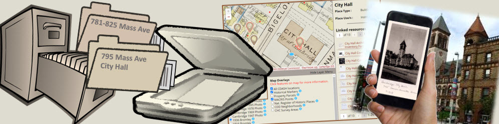

CDASH Schema: The Cambridge Architecture Survey In Omeka
The Cambridge Architectural Survey and History (CDASH) is system for exposing and enriching the Cambridge Architectural Survey -- a large, actively managed collection of documents occupying 10 file cabinets in the office of the Cambridge Historical Commission. As a physical filing system, the Survey is organized as a hierarchal categorization scheme that has thematic as well as geographical components.

This page describes how the process of transforming the physical Architectural Survey the Digital has translated , much of organizational scheme into the document management elements and relationships provided by Omeka-S.
Conceptual Mapping of the Survey Collection (physical filing system)
Research Districts: The survey divides Cambridge into 5 research districts. The district determines where within the overall collection that in item might be filed or found.
Research districts are tagged on each item in the digital collection.
Folders: Every item in the survey is located in a folder. The folders have names that most commonly specify a range of addresses on a street. Sometimes folder names indicate that the contents are all related to a specific named place, occasionally, folder names indicate a thematic heading for the documents within.
Folders are implemented as Omeka Item Sets.
Pages / Documents: The basic element of the physical collection is a page. Folders are full of pages, which are in order and paper-clipped or otherwise fastened together into documents. At the outset of the digitization process CHC staff got together and established a scheme of Document Types.
Places: Every document in the collection is labeled with an address or the name of a place. Places are a useful way of organizing documents. Each place has a Street Address and some places also have Place Names. Places have coordinates that allow them to appear as place markers on the map.
Representing the Collection in Omeka-S
The cataloger's perspective on CDASH begins with the essential structure of the Building Files collection is mapped onto a set of digital catalog concepts provided by the Omeka-S platform -- an open-source web publishing tool widely used by archives and museums.
For the owners, managers and contributors of CDASH, it is essential to understand how Omeka-S represents information as Items, and how CDASH uses Omeka items to represent the documents and places represented in the Building Files.
Topic Index
- Digitizing and Digesting the Survey
- Scanning, Rough Cataloging and Geocoding
- Omeka Items
- CDASH Document Items
- CDASH Place Items
- Document Items are Related to Place Items
- Enriching the Collection
- Creating and Editing CDASH Items
- CDASH Vocabulary Developer Resources
Digitization and Digesting the Collection
The systematic organization and labeling of the folders, pages and documents was a good basis for organizing a protocol for naming and organizing scanned files.
Segmentatiion into Boxes / Batches: Files were taken out of the drawers. The porientation and ordering of pages and labeling of documents was looked after. The cleaned folders loaded into bankers boxes labeled 1 - 45.
Scanning: For each box, the scanning contractor (BosScans) created a file-system folder with the same name as a folder in the box. Each page in the box was scanned with an index number preserving the order that the pages hhad been place into the folder. Each file is named for the last address indication that had been eoncountered in the bundle of pages. All of these sub folders containing TIFF files are themselves organized in parent folders associated with each box.
Rough Sort / Renaming: At the outset of the project, CHC staff got together to build a rough category scheme defining the types of documents found in the collection. You can find these in the Document Types. We developed a drag-and-drop sorting tool that allowed for a simple means of re-grouping pages as multi-page documents, and at the same time, checking the spelling of street names against our address-geocoding database. The result of this process was Box-folders with properly named sub-folders containing scannned pages with articulated encoded file names.
Batch Folder Enrichment: As it happens, the segmentation of the collection into boxes has turned into a handy way of parceling out work. The next phase for each box involves pre-screening the media for problems, and creating a table of the folder names that can be looked through to identify those folders that may be used to tag their contents as related to a specific Named Place. At this stage folder names are inspected and fixed to create neat folder names that will become item sets in Omeka.
Initial Place and Document Digestion and Geocoding The next phase, a bunch of stuff happens to parse file names and folder information, to develop a list of Folders, Places, Documents and Pages. At this stage, a fuzzy geocoding algorithm is used to assign accurate-enough coordinates for about 80% pf hr documents, and needs-correcting rough coordinates for the rest.
...To be continued
Omeka Items
Omeka can be thought of as structure and tool-kit for organizing and cataloging information about things. Omeka represents things as Items. Each item has a landing page that is the public view of a digital image or sme other media along with some descriptive information or metadata about the item. Metadata is used as titles, captions, information about the provenance of the item. Metadata is also used for cataloging, discovery and for linking items together.
Item Types and Omeka Resource Templates
Resource templates are Omeka's means of providing for the definition of different types of Items. CDASH makes use of two resource templates to define Place Items and Document Items.
Systematic assignment of properties to items is what makes the information in Omeka stick together in useful ways, such as discovering information about places that are near specific things or events, and for filtering documents of different types. One of the more critical aspects of the on-going design and management of CDASH is care in choosing and consistency in recording of item properties with the goal of facilitating search and discovery within CDASH and possibly other systems that might refer to CDASH items.
Learn More about Omeka Items
These topics from the Omeka-S User Manual provide n-depth information about Omeka Items:
- Items What they are and how to create and edit them.
- Resource Templates The metadata skeleton for Items and their relationships.
- Vocabularies
- Media
CDASH Document Items
The most typical sort of an item in CDASH, is a scanned document from the Building Files Collection. After the scannning and sorting workflow described above, the image files related to a pages of specific document would be imported into Omeka as Media and linked to an Omeka item of type CDASH Document. The CDASH Document amounts to a collection of metadata properties, some of which have default values assigned depending on the document type and the name of the place that the document is associated with. Other optional metadata properties may be filled in later.
There are several types of documents in the CDASH collection, including Exterior or Interior Images, Architectural Inventory Forms, etc. The full list of Document Types and the other properties of Document Items is expanded in the Document Item Data Dictionary.
CDASH Place Items
To best represent the structure of the Building Files collection in Omeka, it was useful to create a second type of item, used to describe places. The most typical CDASH Place is a simple street address that was found on the tab of one of the folders, or written on a paper artifact from the Building Files. But CDASH Place items can also be used to represent specific Buildings, Monuments, Trees, etc. A more complete dictionary of Place types is provided elsewhere [LINK].
Each CDASH Place item has coordinates that allow for the place to appear as map marker. In the first stages of CDASH development most of these marker locations have been assigned to verified GIS address locations. In many cases the locations of place markers has been interpolated between known address locations. There are potential mishaps in the assignment of locations owing to the historical nature of the Building Files collection and various changes that have occurred with the renaming and renumbering of streets.
The Place Item template provides for many metadata properties to be filled in to record information about buildings and other designed places. Click here to visit the data dictionary for CDASH Place Items.
Document Items are Related to Place Items
Each document item in Omeka includes a reference to one or more places. Rather than referring to a single place with explicit coordinates, the Document item template allows for the document item to be related to one or more place items. This architecture allows us to have documents that are related to more than one place. More importantly, having place items related to documents allows the manager to fine-tune the location of a place marker without having to update individual many documents that relate to that place.Enriching the Collection
The initial structure of CDASH resulting from rough sort of the scans and automated georeferencing and cataloging ads many search, filtering and discovery capabilities to the building files and expands their availability to the world-wide web.
After the automated loading stage has been done CDASH is designed to facilitate correcting, enhancing and creating new Place and Document items and to fine-tune metadata properties to deepen the search, filter and discoverability of the items.
Creating and Editing Omeka Items
We will be doing trainiing and practice on this. But for now, you should know that The Omeka User Manusl page about Items is the official font of wisdom concerning the creation and editing of items.
In understanding the CDASH Schema there are a few important capabilities that are good to know about.
Users do not see properties for items if they are not filled in.
Most of the properties for CDASH Items are optional. If there is no value for a property, the show page for that item does not show an empty field.
Multiple Values or Annotations for A Property
It is useful to know that Omeka allows for multiple values to be added for most properties. For example, if a building was once used as a bank, and then became a drug store, the curator can add both values. This is accomplished by completing the first value entry, then clicking the button at the bottom of the property entry slot and then entering the second value.
In some cases, you may want to annotate a value to clarify an information source or an event that is referred to by a date. For example, it can be useful to add an annotation to an Appear Date to clarify that the Building first appears on the 1873 Bromley map. Or in the case of a Rennovated Date, an annotation can be added to reflect the nature of the renovation.
CDASH Vocabulary Developer Resources
The community of digital archiving has developed standards and principles to enhance the ways that items held in various collections may be discovered and connected together. In the immediate neighborhood of CDASH we can point to Digital Commonwealth. The metadata templates for CDASH use conventional metadata vocabularies where appropriate. We have also created some special vocabularies. All of the resources related to creating the vocabularies and resource templates can be found in the CDASH Vocabulary-Tools repository.
Warning! Fooling around with the live resource templates and vocabularies can result in information being erased from existing items!
...To be Continued
More will be written later about the tools and workflows for creating CDASH Document Items.